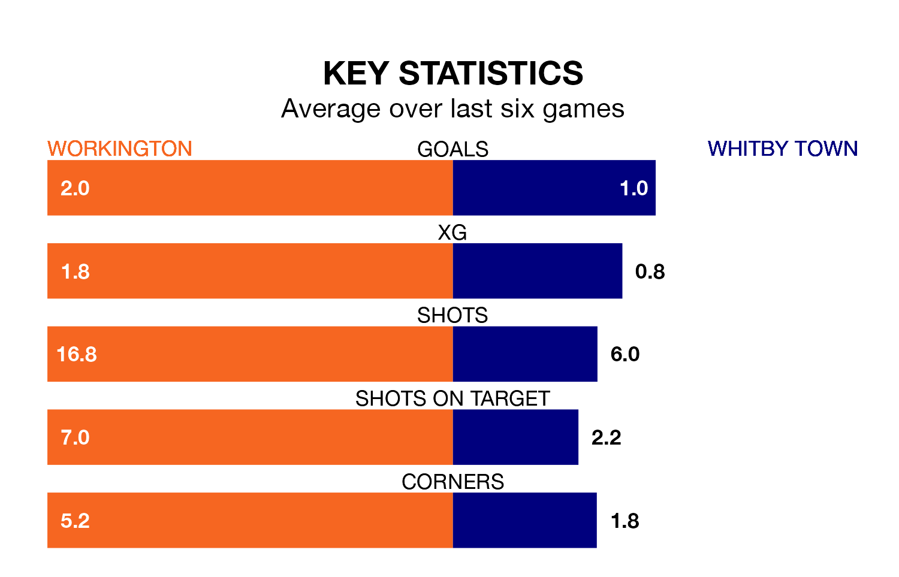

Workington face a challenge to maintain their high-scoring form at home against a tight Whitby Town defence on Saturday.
With 54 goals in 27 games, Workington are the fourth-highest scorers in Northern Premier League ahead of the 3pm kick-off at Borough Park.
They face a Whitby side who have scored 40 in 24 matches, but conceded only 30 goals, putting them third among the league's tightest defences – only Rylands and Worksop Town have conceded fewer goals.
In the last 10 years, Workington and Whitby have played each other on 11 occasions. Workington won four of them, Whitby three, and they drew four times.
On average, Workington scored 1.5 goals and Whitby 0.9 in those matches.
Their last meeting was on November 25, when they played out a 1-1 draw.
Workington are in disappointing form in Northern Premier League, with one win and three draws from their last six games.
With three wins and a draw over that period, Whitby's form is better – they have taken 10 points from 18, compared to the home team's six.
Workington are 15th in the table after 27 games, of which they have won eight and drawn nine, earning 33 points.
Town are six places ahead of Workington in ninth, with 12 wins and five draws putting them on 41 points.
Workington's last match was on January 20, a 2-2 draw against Rylands.
Whitby lost 1-0 against Rylands last time out, on January 13.
Updated: 08:51 (UTC), 25/01/24